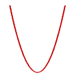
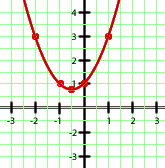

Ejercicios interactivos de funciones cuadráticas
Escoge la función a la que corresponde cada una de las siguientes gráficas:
1
La gráfica dada es una dilatación de la parábola y = x2, puesto que es más "achatada" que esta. Por tanto, podemos deducir que es la tercera opción, es decir,
También podemos reconocer la opción correcta sin más que dar algunos valores. Por ejemplo, la gráfica muestra que la función debe pasar por el punto (3,3), y podemos comprobar que la única opción que verifica esto es la tercera.
2
Se trata de una parábola con las ramas hacia abajo por lo que el coeficiente que acompaña al término de segundo grado debe ser negativo. Así, podemos descartar la primera opción.
Para saber cuál de las dos opciones restantes es la correcta basta comprobar alguno de los puntos de la gráfica. Por ejemplo, el punto (3,0) debe ser un punto de la misma. Si tomamos x = 3 en la segunda opción obtenemos y = 12, con lo que también podemos descartar esta función.
Por tanto, la solución del ejercicio es la tercera expresión dada, es decir, y = −3x2 + 18x − 24
3
La gráfica dada es una traslación de la parábola y = −x2. Al estar trasladada una unidad hacia arriba nos indica que el término independiente debe ser +1, con lo que la opción correcta es la primera, es decir, y = −x2 + 1.
También podemos resolver el ejercicio tomando algún (o algunos) punto de la gráfica y comprobando para qué expresión se cumple. Por ejemplo, la gráfica dada pasa por el punto (0,1) y, tomando x = 0, sólo obtenemos y = 1 con la primera función, lo que nos lleva a que esta es la correcta.
4
La gráfica es una parábola con las ramas hacia arriba, por lo que el coeficiente del término de segundo grado debe ser positivo. Entonces, la última expresión queda descartada.
Observando la gráfica tenemos que para x = 2 y debe valer 0, lo cual sólo se verifica para la segunda opción (y = x2 − 4x + 4), lo que nos lleva a que esta es la correcta.
Escoge la gráfica a la que corresponde cada una de las siguientes funciones:
5y = x2 + x + 1
Por ser positivo el coeficiente que acompaña al término de segundo grado se trata de una parábola con las ramas hacia arriba, con lo que la tercera opción queda descartada. Por otro lado, para x = 0 se tiene y = 1 y podemos observar que (0,1) es punto de la primera gráfica pero no de la segunda. Por tanto, la opción correcta es la primera.
Como hemos comprobado es fácil resolver el ejercicio sin más que fijarnos en ciertos detalles relevantes. De todas formas, si queremos dibujar una parábola a partir de su expresión analítica conviene seguir un procedimiente general, como sigue:
 y = x2 + x + 1
y = x2 + x + 1
En primer lugar, observemos que el coeficiente del término de segundo grado es positivo (a = 1 > 0), con lo que la parábola tendrá las ramas hacia arriba, es decir, la gráfica será de la forma:

 Vértice
Vértice
Con los datos que tenemos podemos hacernos una idea de cómo será la gráfica de nuestra parábola:
 Cortes con los ejes.
Cortes con los ejes.
Corte con el eje OX y = 0
y = 0
Mirando el esbozo que ya hemos hecho podemos deducir que esta parábola no tiene cortes con el eje de coordenadas. Pero también podemos hacerlos resolviendo la ecuación de segundo grado como se muestra a continuación:
Por tanto, no hay ningún corte con el eje OX.
Corte con el eje OY x = 0
x = 0
Ya sabemos otro punto por donde pasará la gráfica:

 Tabla de valores.
Tabla de valores.
| x | y |
|---|---|
| −2 | 3 |
| −1 | 1 |
| −1/2 | 3/4 |
| 0 | 1 |
| 1 | 3 |
Ya tenemos puntos suficientes con los que dibujar la gráfica de la parábola:
Por tanto, la gráfica de la parábola y = x2 + x + 1 es:

6y = 2x2 − x
Por ser positivo el coeficiente que acompaña al término de segundo grado se trata de una parábola con las ramas hacia arriba, con lo que la segunda opción queda descartada. Por otro lado, para x = 1 se tiene y = 1 y podemos observar que (1,1) es punto de la primera gráfica pero no de la tercera. Por tanto, la opción correcta es la primera.
Procedimiento general:
 y = 2x2 − x
y = 2x2 − x
En primer lugar, observemos que el coeficiente del término de segundo grado es positivo (a = 2 > 0), con lo que la parábola tendrá las ramas hacia arriba, es decir, la gráfica será de la forma:
 Vértice
Vértice
Con los datos que tenemos podemos hacernos una idea de cómo será la gráfica de nuestra parábola:
 Cortes con los ejes.
Cortes con los ejes.
Corte con el eje OX y = 0
y = 0
Corte con el eje OY x = 0
x = 0
Ya sabemos otros puntos de la gráfica:
 Tabla de valores.
Tabla de valores.
| x | y |
|---|---|
| −1 | 3 |
| 0 | 0 |
| 1/4 | −1/8 |
| 1/2 | 0 |
| 3/2 | 3 |
Ya tenemos puntos suficientes con los que dibujar la gráfica de la parábola:
Por tanto, la gráfica de la parábola y = 2x2 − x es:
7
Se trata de una dilatación de la parábola y = x2. Así, la segunda opción queda descartada, puesto que aunque sea una dilatación también es una traslación. Además, al ser una dilatación (el coeficiente de x2 es un número entre 0 y 1) debe ser más "ancha" que la parábola y = x2. Por tanto, la opción correcta es la primera.
Procedimiento general:


En primer lugar, observemos que el coeficiente del término de segundo grado es positivo (a = 2 > 0), con lo que la parábola tendrá las ramas hacia arriba, es decir, la gráfica será de la forma:
 Vértice
Vértice
Con los datos que tenemos podemos hacernos una idea de cómo será la gráfica de nuestra parábola:
 Cortes con los ejes.
Cortes con los ejes.
Corte con el eje OX y = 0
y = 0
Corte con el eje OY x = 0
x = 0
 Tabla de valores.
Tabla de valores.
| x | y |
|---|---|
| −2 | 2 |
| −1 | 1/2 |
| 0 | 0 |
| 1 | 1/2 |
| 2 | 2 |
Ya tenemos puntos suficientes con los que dibujar la gráfica de la parábola:
Por tanto, la gráfica de la parábola  es:
es:
8y = −4x2 − 4x + 3
Por ser negativo el coeficiente que acompaña al término de segundo grado se trata de una parábola con las ramas hacia abajo, con lo que la priemra opción queda descartada. Por otro lado, para x = −1/2 se tiene y = 4 y podemos observar que (−1/2,4) es punto de la segunda gráfica pero no de la tercera. Por tanto, la opción correcta es la segunda.
Procedimiento general:
 y = −4x2 − 4x + 3
y = −4x2 − 4x + 3
En primer lugar, observemos que el coeficiente del término de segundo grado es negativo (a = −4 < 0), con lo que la parábola tendrá las ramas hacia abajo, es decir, la gráfica será de la forma:
 Vértice
Vértice
Con los datos que tenemos podemos hacernos una idea de cómo será la gráfica de nuestra parábola:
 Cortes con los ejes.
Cortes con los ejes.
Corte con el eje OX y = 0
y = 0
Corte con el eje OY x = 0
x = 0
 Tabla de valores.
Tabla de valores.
| x | y |
|---|---|
| −2 | −5 |
| −1 | 3 |
| −1/2 | 4 |
| 0 | 3 |
| 1 | −5 |
Ya tenemos puntos suficientes con los que dibujar la gráfica de la parábola:
Por tanto, la gráfica de la parábola y = −4x2 − 4x + 3 es:
Si tienes dudas puedes consultar la teoría